TECHVESTVENTURES RISK ALERTS — Daily Mode — Emergent News Digest — November 5, 2026, 9:00 AM EST see all graphs click TVV Risk Center
TVV RESEARCH DIGEST — November 5, 2026 — 12 desks
1. Major Geopolitical Conflict Developments
- ★ Iran talks, no breakthrough yet: Qatar says both sides are reviewing mediators' proposals after a three-hour Qatari meeting in Tehran, and an official briefed on the talks expected feedback within 36 hours (from Nov 3); a senior Iranian official says there is no deadline and Tehran's conditions (oil-sanctions waiver, end of the naval blockade, frozen funds) must be met before Hormuz reopens. No agreement has been announced as of this morning. The Peninsula · Al Arabiya
- ★ Two tracks at once: Oman's and Iran's foreign ministers discussed practical arrangements to resume Hormuz shipping on Nov 5, while the IRGC says two tankers and a tug caught fire after using "unauthorized routes" (IRGC claim, not independently verified). Gulf News, citing Axios, reports US preparations for possible major combat, noting "preparations are not an order"; Trump told the FT he has no immediate plans to attack. Al Jazeera (Arabic) · Pentagon Defence News
- ★ Russia's overnight attack on Nov 5: 128 drones (65 jet-powered) and two Kh-35 missiles; Ukraine's Air Force says 105 drones were downed, with hits at 18 locations. Ukrainian officials report 9 killed and 19 injured over the past day, including the first civilian death in Kherson since the Oleshky evacuation ceasefire ended on Nov 2. Talks on reconstruction and security guarantees resume in Brussels today. Markets: ceasefire by Dec 31 at 12% (see graph). Hromadske · Kyiv Independent · AP
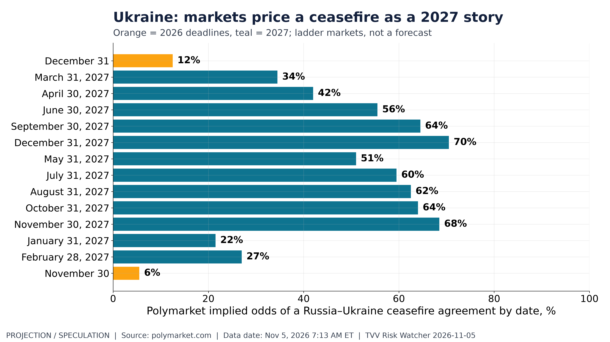
Ukraine: markets price a ceasefire as a 2027 story. Polymarket: Russia–Ukraine ceasefire agreement by Dec 31, 2026 12%; by Jun 30, 2027 56%. Polymarket, Nov 5, 2026 7:13 AM ET. [Projection/Speculation; data as of Nov 5, 2026 7:13 AM ET] Source: polymarket.com data page
2. Major Terror / Security Incidents
- ★ Cyber sabotage of the cold chain: hackers raised temperatures on supermarket refrigeration systems in at least 11 European countries (nine EU states on Nov 2, then Germany, Romania and the UK), spoiling tonnes of food; the EU calls the attacks "not isolated". In France, an attack tried to overheat blood-bank storage and was stopped before any damage. Motive unknown; no one has claimed responsibility. Al Jazeera · AP · SecureResearch
- ★ State-actor cyber: Sekoia reports an APT29 watering-hole campaign pushing iOS/Android exploit chains through compromised sites, including a Ukrainian web-analytics supply-chain compromise; Node-RED flaw CVE-2026-58115 is under active exploitation. Moldova's prime minister suspects a state actor behind a government-database breach (about 750,000 data sets). Cyware · TechFyle
- ★ Crypto theft: Binance says North Korea-linked attackers who posed as recruiters took $6.3bn, of which about $2.85bn was frozen or intercepted (Binance figures, in line with the FBI attribution). Exploited-flaw context: Microsoft leads CISA's 2026 KEV additions with 40 of 283 (see graph). TechFyle · CISA KEV
MAIN TARGETS OF CYBER-SECURITY TERROR RISKS
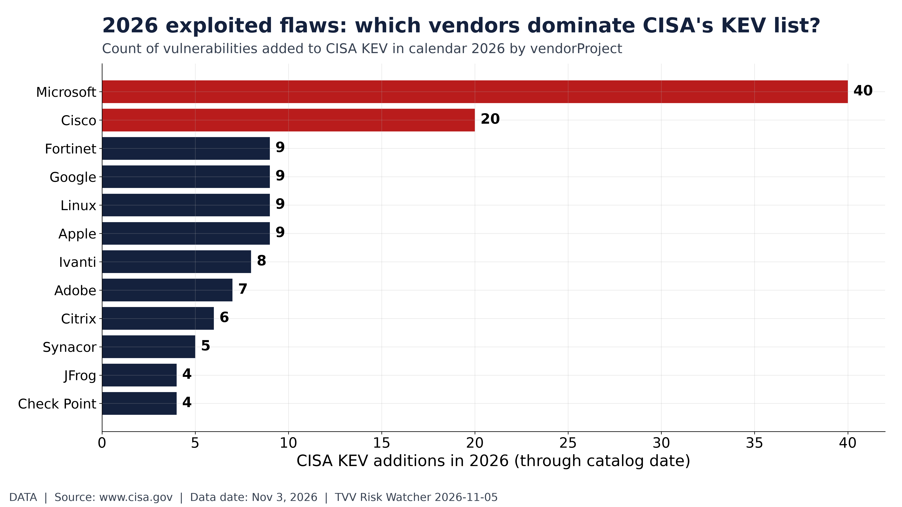
2026 exploited flaws: which vendors dominate CISA's KEV list?. CISA KEV 2026 YTD: 283 additions; top vendor Microsoft with 40. CISA KEV catalog, Nov 3, 2026. [Data; data as of Nov 3, 2026] Source: cisa.gov data page
3. Earthquakes and Eruptions
- ★ No new M6.0+ earthquake with significant casualties or damage since Nov 1; the largest on Nov 4-5 were about M5.0. USGS counts 22 M6+ events in the past 30 days; a same-rate projection (not a USGS forecast) gives about 22 more in the next 30 days (see graphs). USGS · Quakewire
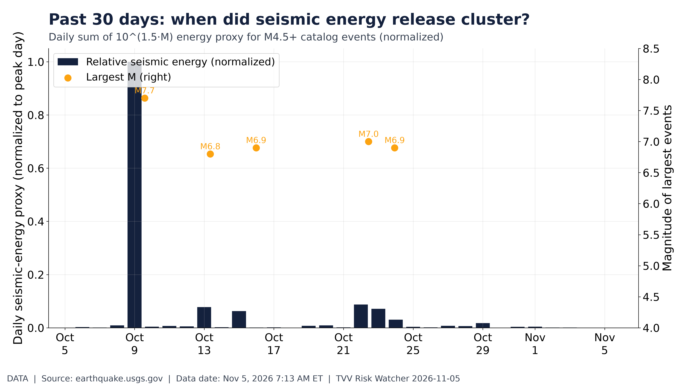
Past 30 days: when did seismic energy release cluster?. USGS M4.5+ past 30 days: 726 events, largest M7.7; energy proxy peaks on largest days. USGS, Nov 5, 2026 7:13 AM ET. [Data; data as of Nov 5, 2026 7:13 AM ET] Source: earthquake.usgs.gov data page
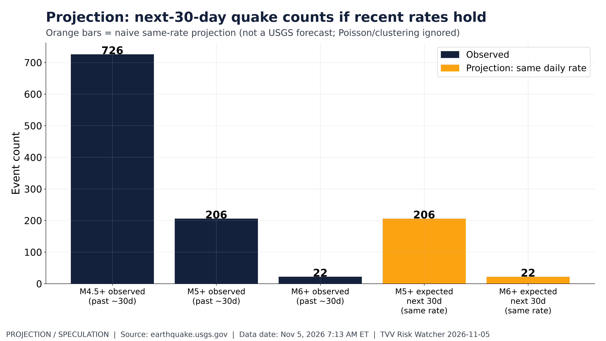
Projection: next-30-day quake counts if recent rates hold. Past ~30d USGS M4.5+: 726; M5+: 206; M6+: 22. Same-rate projection next 30d: M5+ 206, M6+ 22. USGS, Nov 5, 2026 7:13 AM ET. [Projection/Speculation; data as of Nov 5, 2026 7:13 AM ET] Source: earthquake.usgs.gov data page
4. Solar / Space Weather
- ★ Space weather calm: GOES X-ray flux peaked at 2.3e-06 W/m2 (C-class) over the past 7 days, and 10 MeV protons maxed at 0.44 pfu, well below the S1 storm threshold of 10 (see graphs). Pole drift: no new reading since Nov 1; next pole-drift globe Nov 8. NOAA SWPC X-ray · NOAA SWPC protons
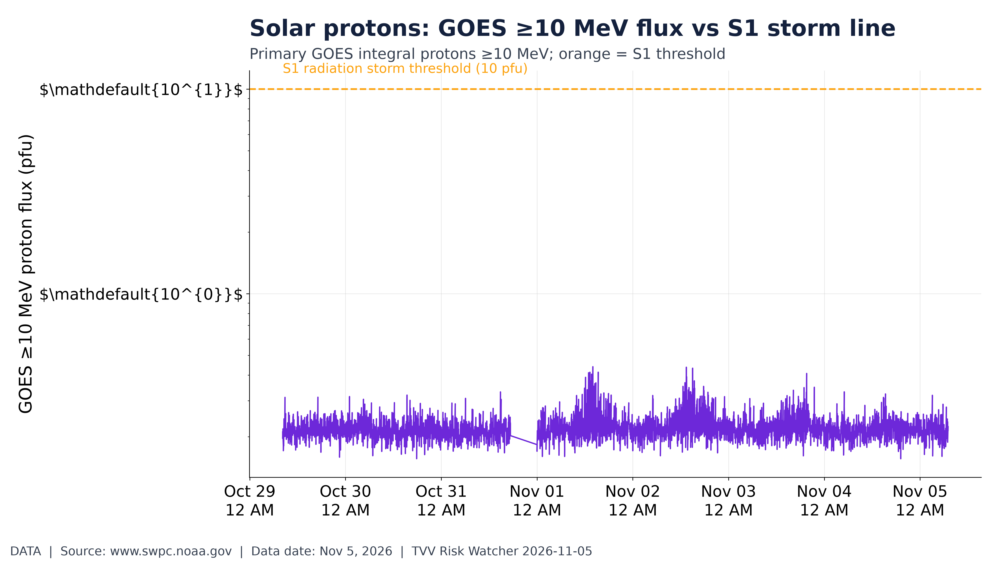
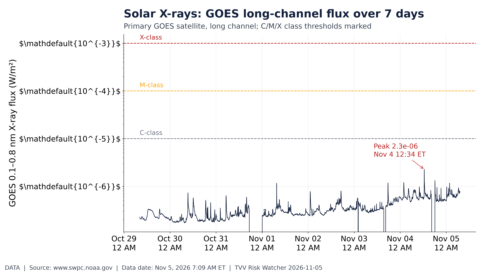
The above is rather more than you might ever want to know about,
but the Sun is our closest “Nuclear Mega-Reactor that Impacts Us Every Day…”
… our Star erupts cyclically and we have no protection except distance and time.
Solar X-rays: GOES long-channel flux over 7 days. GOES 0.1–0.8 nm X-ray flux, 7 days ending Nov 5 7:09 AM ET; peak 2.3e-06 W/m². NOAA SWPC. [Data; data as of Nov 5, 2026 7:09 AM ET] Source: swpc.noaa.gov data page
5. Critical Infrastructure / Transportation Disruptions
- ★ Ukraine power and logistics: overnight drones set fires at critical-infrastructure sites in Dnipro and Samar and at a logistics warehouse in Kyiv region's Bucha district (4 injured). Kyiv Independent · Hromadske
- ★ AI-power trade repriced after the midterms: data-center power, cooling and REIT names moved against utilities and chips from the Nov 3 close (see graph), as investors weigh hearings, permitting friction and state limits on data-center build-outs. Saxo
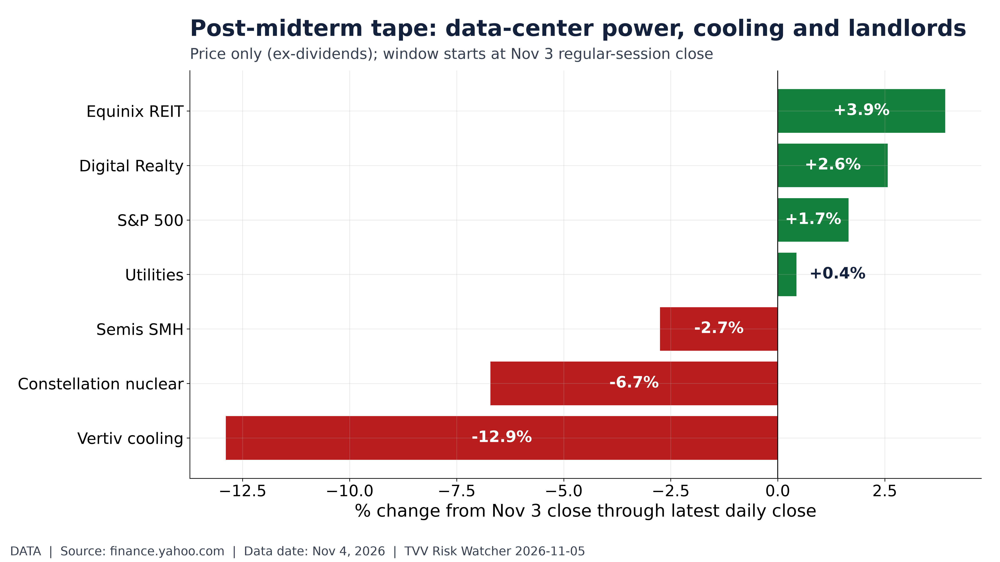
Post-midterm tape: data-center power, cooling and landlords. Total return price moves since Nov 3 close for DC power/cooling/REITs vs SPY/XLU/SMH. Yahoo Finance, Nov 4, 2026. [Data; data as of Nov 4, 2026] Source: finance.yahoo.com data page
6. Econo-Metrics
- ★ Labor reads before Friday's jobs report: ADP says private employers added 86,000 jobs in October (consensus about 75,000; September revised to 86,000), with professional and business services down 27,000 for a third month; base pay +3.2% y/y. ISM services PMI 54.5 (from 54.9), employment 51.4, prices 73.0, backlogs the highest since July 2022. Initial claims are due today; the October payrolls report is Fri Nov 6, 8:30 AM ET. ADP · ISM via PR Newswire · Capital Finance Bureau
- ★ Claims stay low: initial claims 194k (4-week average 197k) and continuing claims 1.70M for the week of Oct 24 (see graph). Polymarket prices 2 Fed hikes in 2026 at 78% (see graph); implication: markets still see inflation risk outweighing the post-election drop in yields. FRED · Polymarket
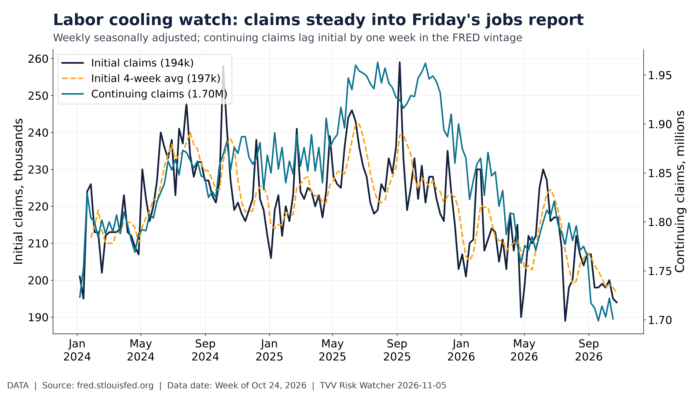
Labor cooling watch: claims steady into Friday's jobs report. Initial claims 194k (4-wk avg 197k); continuing 1.70M. DOL via FRED, week of Oct 24. [Data; data as of Week of Oct 24, 2026] Source: fred.stlouisfed.org data page
AM ET] Source: polymarket.com data page
7. Epidemic / Bio-Metrics
- ★ Ebola (Bundibugyo): WHO recommends adding two Bundibugyo-specific vaccine candidates to the Tumaini trial as treatment research advances; a British healthcare worker infected in DR Congo is being flown to the UK. ECDC's latest count is 10,532 confirmed cases and 5,126 deaths in DRC. WHO · The Guardian · ECDC
- ★ US flu season: the FluSurv-NET early-season hospitalization rate is 1.30 per 100,000 (week of Oct 24) against prior seasons (see graph); early figures are revised up. SV.2.4: still no WHO, HK CHP, Taiwan CDC or China CDC confirmation of a surge. CDC RESP-NET
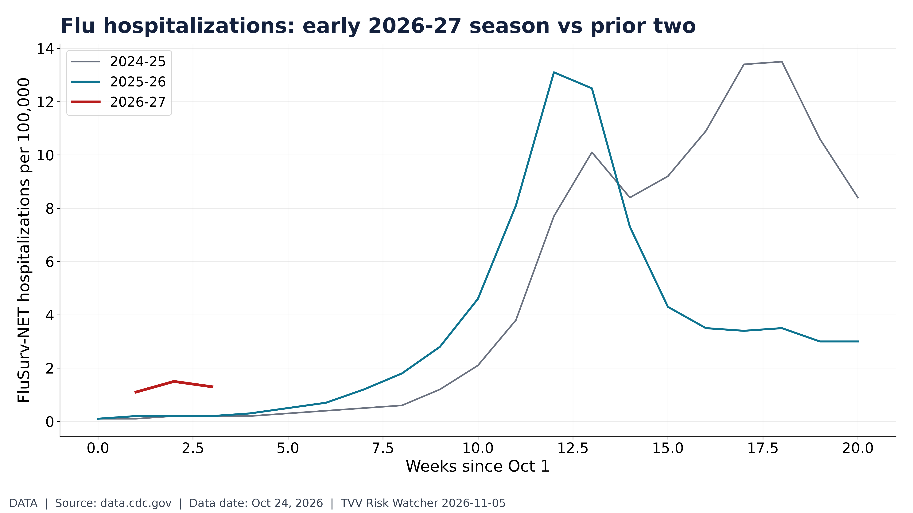
Flu hospitalizations: early 2026-27 season vs prior two. FluSurv-NET early season: latest 1.30 per 100k (week of Oct 24). CDC RESP-NET. [Data; data as of Oct 24, 2026] Source: cdc.gov data page
8. Gold and Silver and Commodities
- ★ Gold is back above $4,100: about $4,143 (+1.7%) after a 3.3% jump on Wednesday, its biggest rally since August, as the dollar and yields fell; silver about $53. Gold/silver ratio 78.4 (see graph). Polymarket gives about 76% that gold touches $4,200 in November (see graph); next resistance cited near $4,186 and $4,225. IC Markets · TradingView · Polymarket
- ★ Oil falls for a fourth day: Brent $93.65 (-1.0%) and WTI $86.98 (-1.3%) after an 8%+ plunge on Wednesday to the lowest since Aug 31, on hopes that the Democratic sweep reduces escalation risk. Brent was above $117 last week. The FT reports that a US-Russia diesel deal is faltering as US-bound tankers turn away. TradingView · Newsquawk · Saxo
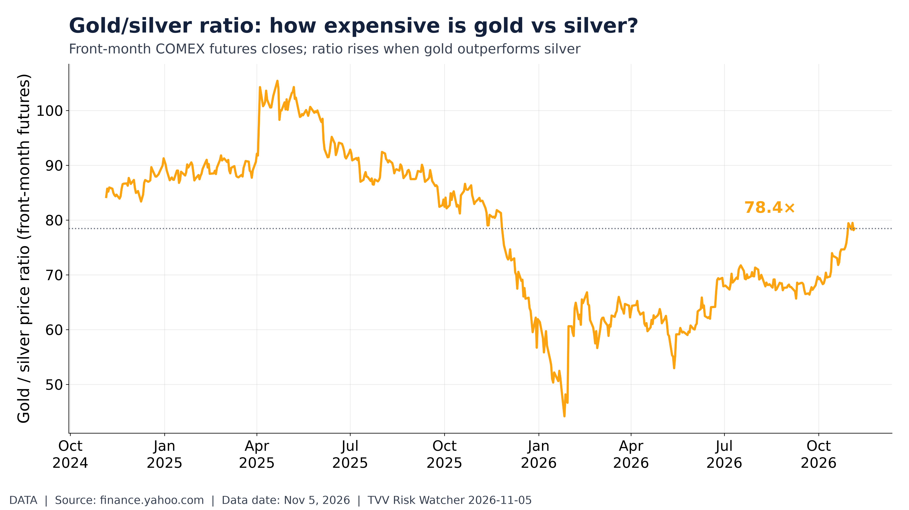
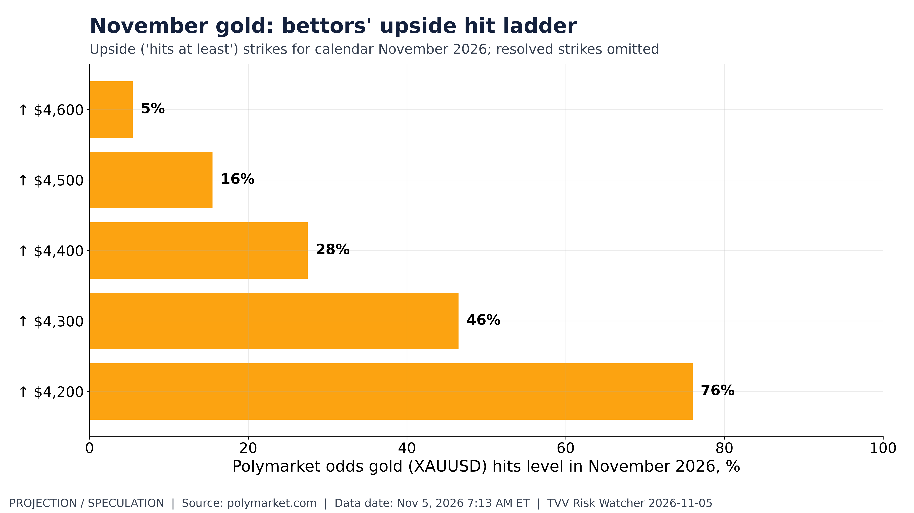
November gold: bettors' upside hit ladder. Polymarket Nov 2026 gold upside hits: e.g. ↑ $4,200 at 76% if present. Polymarket, Nov 5, 2026 7:13 AM ET. [Projection/Speculation; data as of Nov 5, 2026 7:13 AM ET] Source: polymarket.com data page
9. Stock Averages and Nasdaq Major Movers
- ★ Wednesday: Dow +3% (more than 1,500 points, its best day since April 2025), S&P 500 +1.6%, Nasdaq-100 +0.9%; Microsoft +6.7%, Amazon +6.1%, Apple +5.3%, Nvidia -3.2%. This morning: Dow futures +0.5%, S&P +0.1%, Nasdaq-100 -0.7%; US 10-year about 4.84%; VIX 16.6. Kospi fell more than 5% (SK Hynix about -10%) (see graph). Saxo · Yahoo Finance · IC Markets
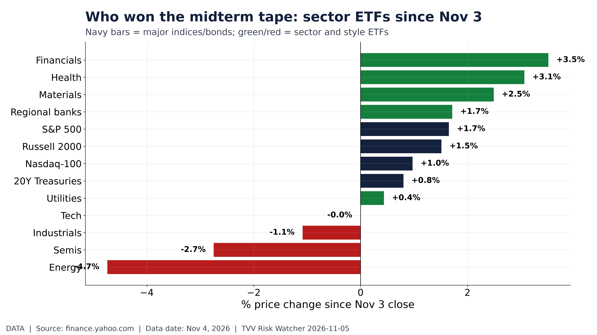
Who won the midterm tape: sector ETFs since Nov 3. Sector and style ETF price moves from Nov 3 close through Nov 4. Yahoo Finance. [Data; data as of Nov 4, 2026] Source: finance.yahoo.com data page
10. Polymarket and Kalshi Sentiment Highlights
- ★ Alaska Senate still uncalled: Democrat Mary Peltola led Republican Dan Sullivan by about 600 first-choice votes (48.2% to 47.9%); neither has 50%, so ranked-choice tabulation follows on Nov 18. Shutdown odds: Polymarket prices a shutdown by Dec 12 at 27% and by Dec 31 at 33% (see graph). USA Today · Alaska Division of Elections · Polymarket
- ★ Ukraine peace-deal odds: Polymarket prices a signed peace deal by Dec 31, 2026 at 8% and by end-2027 at 31% (see graph). VP Vance posted that "the reason we lost [the midterms] is the war", which raises odds that Washington pushes for a settlement on Iran. Polymarket · Yahoo Finance
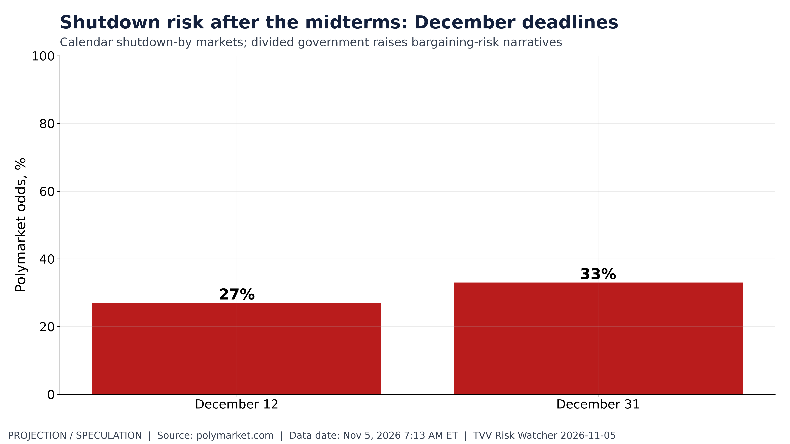
Shutdown risk after the midterms: December deadlines. Polymarket: US government shutdown by Dec 12 27%; by Dec 31 33%. Polymarket, Nov 5, 2026 7:13 AM ET. [Projection/Speculation; data as of Nov 5, 2026 7:13 AM ET] Source: polymarket.com data page
7:13 AM ET] Source: polymarket.com data page
11. Tech-Metrics
- ★ Qualcomm falls on its guidance: revenue missed, handset-chip sales were down 26%, and guidance was weak; shares fell about 6.5% after hours. Arm and GlobalFoundries also disappointed. Qualcomm says its data-center business is constrained by supply rather than demand and targets $5bn of fiscal-2027 revenue. Apple's price path since its Nov 2 earnings is shown in a graph. CNBC · SiliconANGLE · IC Markets
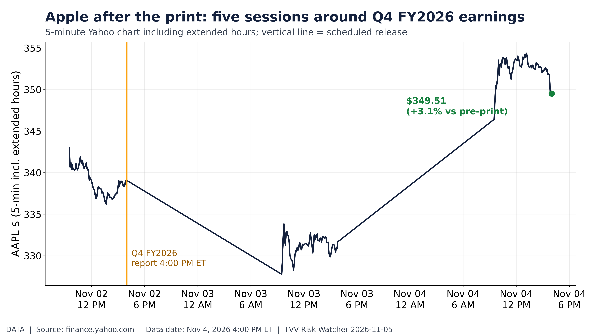
Apple after the print: five sessions around Q4 FY2026 earnings. AAPL from Oct 31 to Nov 4 4:00 PM ET: +3.1% vs Nov 2 4:00 PM level $339.11. Yahoo Finance. [Data; data as of Nov 4, 2026 4:00 PM ET] Source: finance.yahoo.com data page
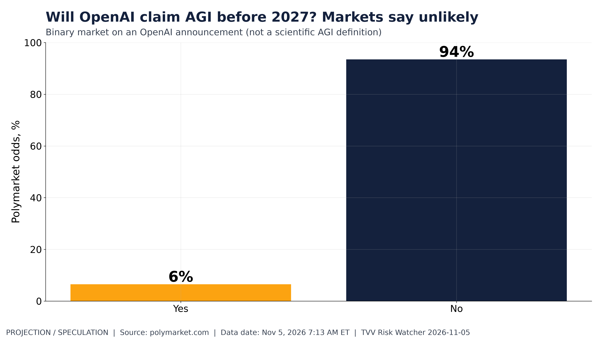
Will OpenAI claim AGI before 2027? Markets say unlikely. Polymarket: OpenAI announces it has achieved AGI before 2027 6% yes. Polymarket, Nov 5, 2026 7:13 AM ET. [Projection/Speculation; data as of Nov 5, 2026 7:13 AM ET] Source: polymarket.com data page
12. AI Hypergrowth Risks
- ★ Rotation away from AI hardware: Asian chip stocks slid (SK Hynix about -10%, Samsung about -8%) as the Democratic-controlled Congress raised concern about tighter US data-center rules, while investors favored hyperscalers that may spend less (see graph of AI infrastructure and neocloud stocks since Oct 27). Investing.com · Saxo
- ★ AI expectations and jobs: Polymarket gives just 6% that OpenAI announces AGI before 2027 (see graph), and prices the 2026 unemployment-rate thresholds on its jobs ladder (see graph). Implication: markets expect AI's labor effects to show up gradually, not as a 2026 shock; ADP's professional and business services job losses are the sector to watch. Polymarket · Polymarket · ADP
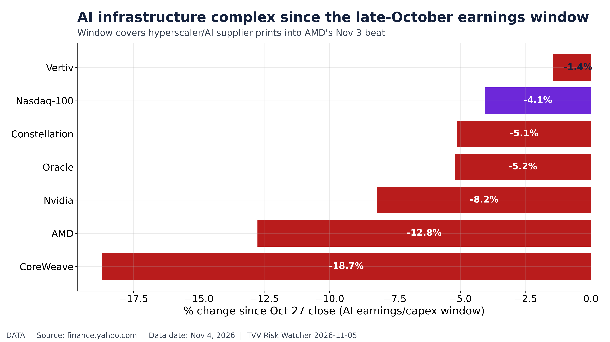
AI infrastructure complex since the late-October earnings window. Price moves since Oct 27 for CRWV/ORCL/VRT/CEG/NVDA/AMD vs QQQ through Nov 4. Yahoo Finance. [Data; data as of Nov 4, 2026] Source: finance.yahoo.com data page
TECHVESTVENTURES ACTION-ALERT — November 5, 2026 see all graphs click TVV Risk Center
EDITOR — Michael Hentschel
Most news events require or spawn no action or reaction, some (but not many) are or become warnings. We draw attention to substantial lifestyle risks and market risks in particular, some created by Mid-Term Vote anxieties, Middle East tensions, vast over-indebtedness globally, and other events we track. Longer term but capable of causing sudden power surges as serious as the Carrington Event. Climate instability occasioned by long-term cyclical solar electro-magnetic flares, is becoming much more prominent and even more likely. New AI predictive analytics and pattern seekers are pointed in some of these directions, and we monitor imminent likelihood. Some readers might hedge and others might see opportunity. The above is not investment advice.